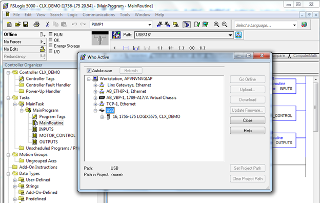

[Logix] Bài 10: Download/Upload và chỉnh sửa Online trong RSLogix 5000
Ngày đăng: 22/10/2012 — Cập nhật: 2025
Tiếng Việt | English below
Download/Upload và Online Edit
Có nhiều cách Download/Upload chương trình cho Controllogix, Compactlogix:
- Qua cổng USB (Controllogix L7x, Compactlogix 5370 mới)
- Qua cổng Serial RS-232 (các dòng PAC, PLC đời cũ như L6x, L5x, tốc độ chậm)
- Qua cổng Ethernet (thường dùng nhất, tốc độ cao, dễ cấu hình)



Ghi chú
- Luôn kiểm tra kỹ trước khi Download để tránh ghi đè chương trình đang chạy.
- Chỉnh sửa Online giúp giảm thời gian dừng máy nhưng cần thao tác cẩn thận.
- Nên lưu lại chương trình trước và sau khi chỉnh sửa.
Tài liệu tham khảo
Giáp Văn Vỹ – 2012
[Logix] Lesson 10: Download/Upload and Online Edit in RSLogix 5000
English version
Download/Upload and Online Edit
- Via USB port (newer Controllogix L7x, Compactlogix 5370)
- Via Serial RS-232 (older PAC, PLC like L6x, L5x, slower)
- Via Ethernet (most common, fast, easy to configure)
Notes
- Always double-check before Downloading to avoid overwriting a running program.
- Online Edit reduces downtime but requires careful operation.
- Save your program before and after editing.
Reference
Giap Van Vy – 2012